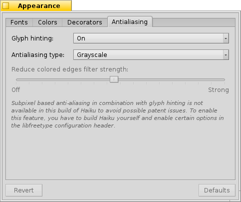
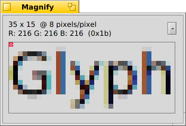

外观
| 桌面栏: | ||
| 位置: | /boot/system/preferences/Appearance | |
| 设置: | ~/config/settings/system/app_server/appearance ~/config/settings/system/app_server/fonts |
外观首选项允许你对 Haiku 的外观做出一些修改。
 字体
字体
Haiku定义了三种标准字体用于不同的目的。您可以设置系统中使用的普通，粗体和等宽字体类型。除此之外，还有用于菜单字体的独立设置。
安装字体
New fonts that don't come as part of a regular .hpkg package, can be installed by copying them into a subfolder according to the font type (otfonts, psfonts or ttfonts) into their respective non-packaged folder (see topic Filesystem layout). For TrueType fonts that would be:
| /boot/system/non-packaged/data/fonts/ttfonts/ | 用于对所有用户都可用的字体。 | |
| /boot/home/config/non-packaged/data/fonts/ttfonts/ | 用于仅对自己可用的字体。 |
颜色
在 标签页中，您可以对用户界面不同部分的颜色做出修改。当然，这些颜色也支持拖拽操作；您从其他程序选取颜色，例如：WonderBrush，图标套件 或者 背景 面板。
If you activate the checkmark to , the list of user interface colors gets reduced to:
| default: gray | ||
| default: blue, used e.g. to outline the active widget like a button or list | ||
| default: the iconic yellow window tab |
With this setting all the other colors are set automatically. For example, the text color becomes white if you choose a dark panel color.
You can also choose those three primary colors first and have the system set the secondary colors accordingly, then remove the checkmark and fine-tune individual colors.
窗口装饰
Decorators 决定了窗口和所有界面元素的样式和外观。目前，Haiku 仅带有默认的装饰。如果您安装了其他的装饰，您可以从弹出菜单中选择使用。
Haiku 默认的装饰可以让您选择箭头类型和滚动条：滚动栏两端的单向箭头，或者类似于传统 BeOS 方式的双向箭头。或者在鼠标移动时，可以让其左右上下滚动。
抗锯齿

标签页提供了关于计算机屏幕中图形渲染的不同设置选项。
字体微调
激活的 把所有字符的横边和竖边放置在两个像素中间来排列字符。这样的结果是产生了鲜明的对比，尤其是在处理白底黑字时更加突出。而且文本显得非常整洁。同时还有一个 设置，该设置对于类似于上网本的低分辨率设备非常有用。当字体精调启用之后，小字体的显示效果会很不好，但是文本编辑软件和终端中的字体显示效果将会显著提高。
请看下面不同精调字体经过放大之后的截图：
 Hinting: off |  Hinting: on |
需要指出的是，本页中所有的 放大镜 窗口当然也是通过一些选项实现自我渲染的。所以，你通过对比来获得有关设置的真实印象，例如，粗体的黄色标题或者文本 "33 x 15 @ 8 pixels/pixel"。
抗锯齿类型
另一个可以用于渲染的是 抗锯齿技术 ，它支持所有的矢量字体和文本，通过改变一些像素的颜色来使线条平滑。有两种方法实现抗锯齿类型：
改变边缘像素的灰度。
会有更好的效果，尤其是对于 (高分辨率的) LCD 显示器。因为 LCD 显示器的每个像素是由红，绿，蓝三种基本色组成，所以该方法除了调节边缘像素的灰度，它还改变了边缘像素的部分颜色。
同样的，以上两种方法处理过的字体放大后的截图如下：
灰度，微调：关闭 |  LCD 亚像素，微调：关闭 |
基于亚像素的抗锯齿技术给其对象添加了轻微的色彩亮度，但不是所有的人都能够忍受这种渲染。在 Haiku 中，你可以混合使用这两种方法，并且可以通过调节滑动条找出适合自己的配置方案。
This is how hinting with compares to Grayscale:
灰度，微调：开启 | LCD 亚像素，微调：开启 |
在本面板底部有两个按钮：
| 重置所有设置未默认值。 | ||
| 取消设置，恢复到打开外观首选项前的设置状态。 |